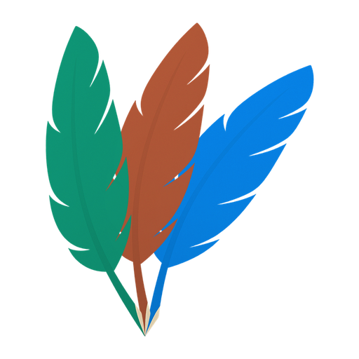
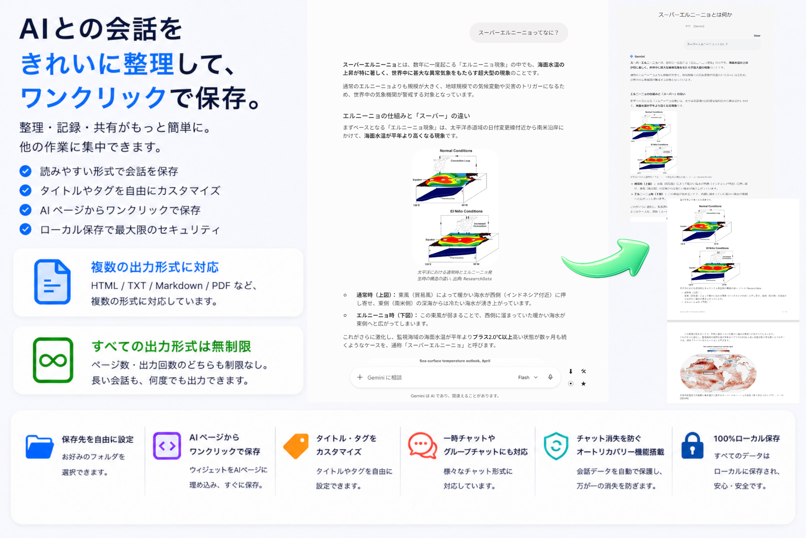
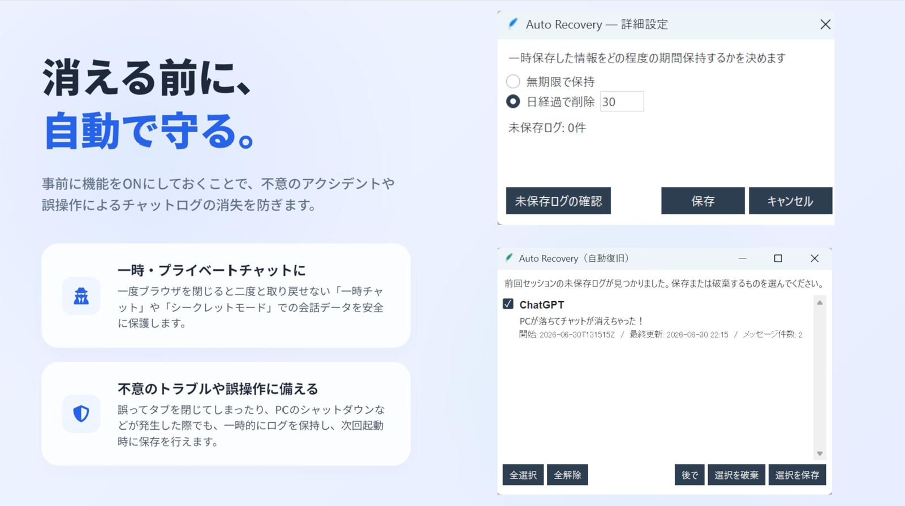
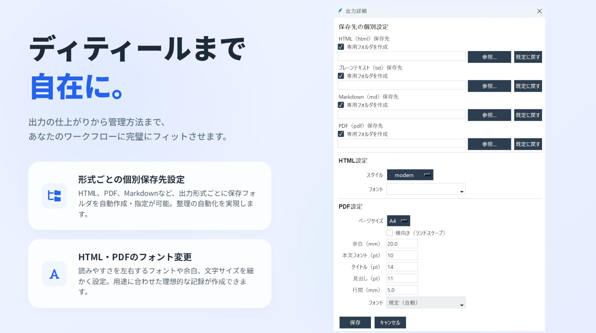

ChatGPT・Claude・Gemini の会話を、ワンクリックで自分の PC に保存。
買い切り・月額なし。Windows 10 / 11 と Google Chrome が必要です。アカウント登録も、外部への送信もありません。
保存も設定もすべて自分の PC の中で完結します。会話の内容が外部へ送られることはありません。
うっかり閉じてしまった一時チャット・シークレットチャットのログも、失わずに保存できます。 有効にしておくと会話中のログが端末に一時的に保持され、次回起動時に保存するか尋ねる画面が出ます。 オン / オフは設定で自由に切り替えられるので、残したい時だけ残せます。
よく使うタグを最大 50 個まで登録しておき、保存時に選ぶだけ。ファイル名と本文タイトルに付くので、 会話が増えても名前の付け方がぶれません。
HTML・Markdown・テキスト・PDF に、それぞれ別の保存先を指定できます。 Markdown は Obsidian の保管庫へ、PDF は仕事用フォルダへ、といった振り分けが保存と同時に済みます。
チャット画面には小さな保存ボタンが出るだけ。細かい設定は本体側でまとめて行います。



無料版に期間制限・回数制限はありません。
| 無料版 | 有料版 | |
|---|---|---|
| ワンクリック保存（キャプチャ含む） | ○ | ○ |
| HTML で保存（回数無制限） | ○ | ○ |
| タイトル構成・保存先の指定 | ○ | ○ |
| ファイル名へのタグ付け | 3 個まで | 50 個まで |
| Markdown・テキスト・PDF 出力 | - | ○ |
| オートリカバリー | - | ○ |
| 形式ごとの保存先 | - | ○ |
| チャット種類ごとのサブフォルダ | - | ○ |
有料版は 1 版 760 円、3 種セット 1,750 円。買い切りで、月額はかかりません。 無料版と有料版は同じ Chrome 拡張を使うため、後から切り替える場合も入れ替えるだけで済みます。